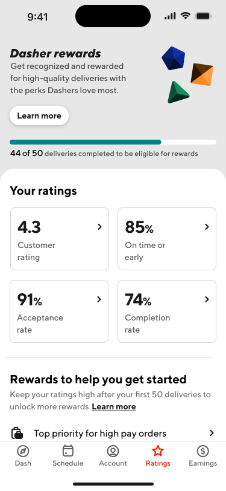
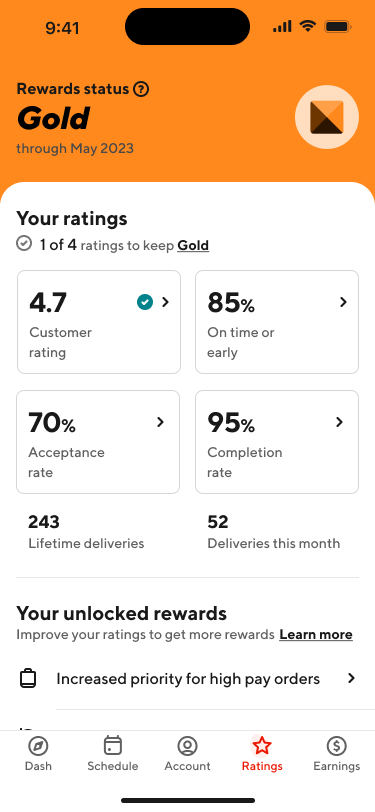

DoorDash
DoorDash
Dasher rewards
Context
DoorDash’s delivery network depends on millions of decisions made by Dashers every day. While the platform offered numerous incentives and performance programs, many were fragmented, difficult to discover, and lacked a cohesive experience that helped Dashers understand how their actions translated into rewards.
dasher rewards was an effort to create a unified framework that aligned the needs of Dashers and DoorDash. For Dashers, it provided greater transparency into performance expectations, clearer goals to work toward, and meaningful incentives for delivering high-quality service. For DoorDash, it created a mechanism for encouraging behaviors that improved delivery quality, operational efficiency, and long-term retention across the platform.
I led the design of an end-to-end rewards experience that transformed a collection of disconnected incentive programs into a cohesive system. The solution introduced clearer program education, transparent tier requirements, personalized progress tracking, and richer reward experiences. The experience helped Dashers see how their everyday actions on the platform translated into rewards, creating a stronger connection between performance and value.

